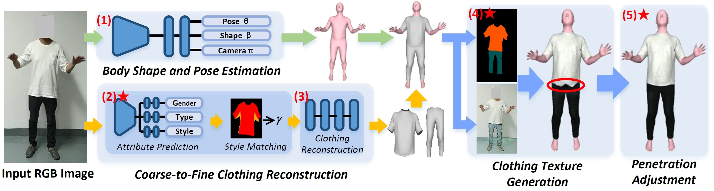

We propose a novel method to reconstruct style-matched and texture-realistic clothing from a single image. Our work mainly addresses two challenging problems in clothing reconstruction: (1) how to automatically generate style-consistent geometric clothing models from a single image; (2) how to generate realistic clothing texture when suffering from significant pose estimation error. For the former (geometry reconstruction), we propose a coarse-to-fine approach to empower TailorNet to process image inputs and generate style-matched clothing. The key is that our two-stage method can predict clothing style parameters (TailorNet’s latent vectors indicating clothing shape) from images. We first use an attribute prediction network to identify the gender, clothing type, and style categories from the input. Then, we propose a tightness table-based estimation method to obtain specific clothing style parameter values. For the latter (textures generation), we design a multi-information fusion approach to deal with ghosting issues caused by pose estimate errors. The method utilizes semantic and intrinsic texture information to effectively deal with wrong color sampling in the image. Extensive experiments demonstrate that our method has reached the state-of-the-art level and realized the realistic body and clothing reconstruction from a single RGB image.

Fig 1. Our Pipeline.
Fig 2. Fitting Mannequin.
Fig 3. Reconstruction results.
Fig 4. Reconstruction results.
Xinqi Liu, Jituo Li, Guodong Lu. "Robust and Automated Body and Clothing Reconstruction from a Single RGB Image". Computers & Graphics 2023.
@InProceedings{Liu2023MulayCloth,
author = {Jituo Li, Xinqi Liu, Haijing Deng, Guodong Lu and Jin Wang},
title = {Robust and Automated Body and Clothing Reconstruction from a Single RGB Image},
booktitle = {Computers & Graphics, 2023},
year={2023},
publisher={IEEE},
}